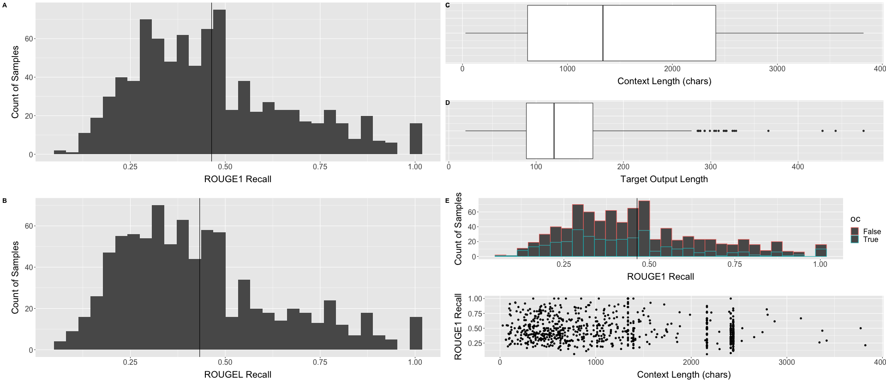

Backlinks
library(tidyverse) library(gridExtra) library(cowplot)
1 Validation Results
Grab the CSV file
data_withcnd <- read.csv("./valdata.csv")
colnames(data_withcnd)
rouge1_prec rouge1_recc rouge1_fm rougel_prec rougel_recc rougel_fm
We will proceed to plot the distribution, removing samples whereby the output is all zero exactly as all of those values (see the codebase) was resulted when the input data contain no mention of the term to be defined, and hence isn't in scope
data_total <- data_withcnd data_withcnd <- data_withcnd %>% filter(rouge1_prec+rougel_prec != 0)
data.frame(measure=colnames(data_withcnd), mean=colMeans(data_withcnd))
rouge1_prec 0.628426120831488 rouge1_recc 0.464001115660334 rouge1_fm 0.509749913066602 rougel_prec 0.584153097709648 rougel_recc 0.432615317695647 rougel_fm 0.474798716995343
FALSE
Calculation of p value for rogue1 precision and roguel precision
t.test(data_withcnd$rouge1_prec)
One Sample t-test data: data_withcnd$rouge1_prec t = 90.644, df = 851, p-value < 2.2e-16 alternative hypothesis: true mean is not equal to 0 95 percent confidence interval: 0.6148185 0.6420337 sample estimates: mean of x 0.6284261
t.test(data_withcnd$rougel_prec)
One Sample t-test data: data_withcnd$rougel_prec t = 79.005, df = 851, p-value < 2.2e-16 alternative hypothesis: true mean is not equal to 0 95 percent confidence interval: 0.5696407 0.5986655 sample estimates: mean of x 0.5841531
plot_rogue1_recc <- data_withcnd %>% ggplot() + geom_histogram(aes(x=rouge1_recc)) + xlab("ROUGE1 Recall") + ylab("Count of Samples") + geom_vline(aes(xintercept = mean(rouge1_recc))) + theme(text = element_text(size=20), axis.title.y = element_text(margin = margin(t = 0, r = 10, b = 0, l = 20)), axis.title.x = element_text(margin = margin(t = 10, r = 0, b = 20, l = 0)))
plot_roguel_recc <- data_withcnd %>% ggplot() + geom_histogram(aes(x=rougel_recc)) + xlab("ROUGEL Recall") + ylab("Count of Samples") + geom_vline(aes(xintercept = mean(rougel_recc))) + theme(text = element_text(size=20), axis.title.y = element_text(margin = margin(t = 0, r = 10, b = 0, l = 20)), axis.title.x = element_text(margin = margin(t = 10, r = 0, b = 20, l = 0)))
We will also
2 Validation Data
validation_data <- read.csv("./validata.csv")
Rows
colnames(validation_data)
title context desired_output oc
context_box_plot <- validation_data %>% ggplot() + geom_boxplot(aes(x=nchar(context)))+ theme(text = element_text(size=20), axis.title.y = element_text(margin = margin(t = 0, r = 10, b = 0, l = 20)), axis.title.x = element_text(margin = margin(t = 10, r = 0, b = 20, l = 0))) + xlab("Context Length (chars)") + guides(y = "none")
prediction_box_plot <- validation_data %>% ggplot() + geom_boxplot(aes(x=nchar(desired_output)))+ theme(text = element_text(size=20), axis.title.y = element_text(margin = margin(t = 0, r = 10, b = 0, l = 20)), axis.title.x = element_text(margin = margin(t = 10, r = 0, b = 20, l = 0))) + xlab("Target Output Length") + guides(y = "none")
3 Wandb Exported BLEU over time
wandb_bleu <- read.csv("./wandb_export_bleu.csv")
Columns:
colnames(wandb_bleu)
Step northern.sky.16516...val_bleu_20rolling northern.sky.16516...val_bleu_20rolling__MIN northern.sky.16516...val_bleu_20rolling__MAX
val_bleu_rolling <- wandb_bleu %>% ggplot() + geom_line(aes(x=Step, y=northern.sky.16516...val_bleu_20rolling))+ theme(text = element_text(size=20), axis.title.y = element_text(margin = margin(t = 0, r = 10, b = 0, l = 20)), axis.title.x = element_text(margin = margin(t = 10, r = 0, b = 20, l = 0))) + xlab("Step in Training") + ylab("BLEU Value on Validation Set (avg. 20 rolling)")
4 OC and Length Influencing Validation
total <- data_withcnd total$oc = validation_data$oc total$context = validation_data$context total <- total %>% filter(rouge1_prec+rougel_prec != 0)
colnames(total)
rouge1_prec rouge1_recc rouge1_fm rougel_prec rougel_recc rougel_fm oc context
plot_rogue1_colors <- total %>% ggplot() + geom_histogram(aes(x=rouge1_recc, color=oc)) + xlab("ROUGE1 Recall") + ylab("Count of Samples") + geom_vline(aes(xintercept = mean(rouge1_recc))) + theme(text = element_text(size=20), axis.title.y = element_text(margin = margin(t = 0, r = 10, b = 0, l = 20)), axis.title.x = element_text(margin = margin(t = 10, r = 0, b = 20, l = 0)))
plot_rogue1_context <- total %>% ggplot() + geom_point(aes(x=nchar(context), y=rouge1_recc)) + xlab("Context Length (chars)") + ylab("ROUGE1 Recall") + theme(text = element_text(size=20), axis.title.y = element_text(margin = margin(t = 0, r = 10, b = 0, l = 20)), axis.title.x = element_text(margin = margin(t = 10, r = 0, b = 20, l = 0)))
does the above work?
cor.test(nchar(total$context), total$rouge1_recc)
Pearson's product-moment correlation
data: nchar(total$context) and total$rouge1_recc
t = -5.1299, df = 850, p-value = 3.594e-07
alternative hypothesis: true correlation is not equal to 0
95 percent confidence interval:
-0.2376886 -0.1073757
sample estimates:
cor
-0.1732905
5 Figures
plot_grid(plot_grid(plot_rogue1_recc, plot_roguel_recc, ncol=1, labels = c("A", "B")), plot_grid(plot_grid(context_box_plot, prediction_box_plot, ncol=1, labels=c("C", "D")), plot_grid(plot_rogue1_colors, plot_rogue1_context, ncol=1, labels=c("E", "F")), ncol=1, labels=c("C", "E", "F")), ncol=2)
